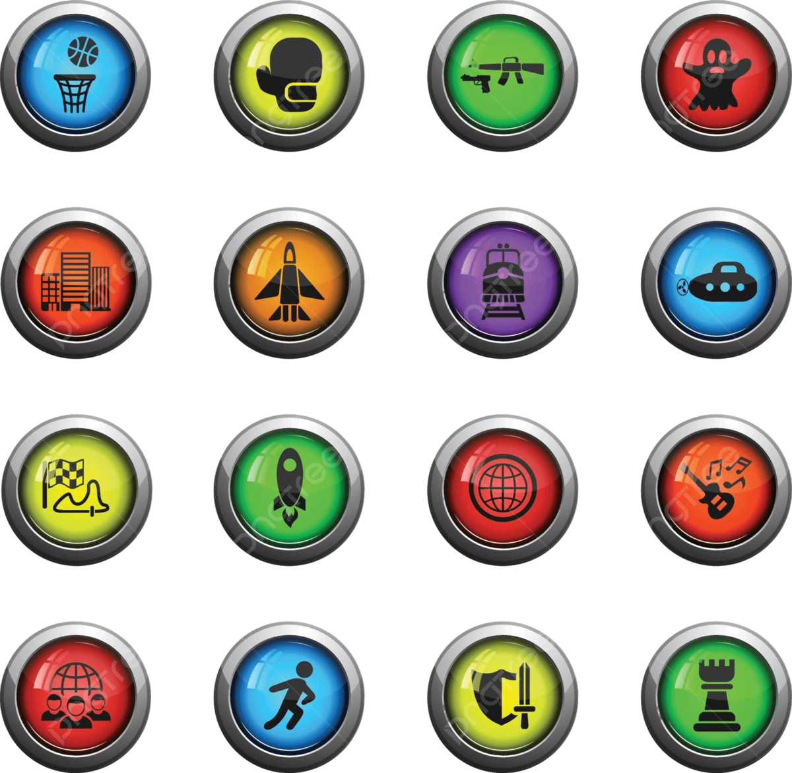

Video game genres categorize games based on their gameplay mechanics and player experiences. Popular genres include action, role-playing (RPG), strategy, and sports. Each genre appeals to different types of players. For instance, RPGs focus on character progression and story, while puzzle games test logic and pattern recognition. Many modern titles blend multiple genres, creating unique hybrid experiences that push the boundaries of traditional experiences.
